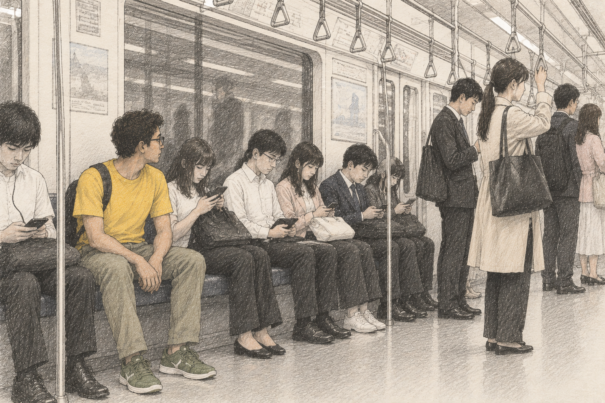

01 / GOVERNANCE
What makes institutions work?
Districts, cities, departments, implementation, incentives, accountability and the gap between policy intent and lived reality.
↗
Notes from a life spent moving between cities, field administration, public policy, technology, skills, data — and the questions that sit underneath them.
Observations from everyday life on the left. Deep-dive research on the right.

Japanese sense of colour is very unique and stylish. A field note on the minimalist trend, Edo period laws, and 'iki'.
Read the field note →
Nudity is a great equalizer. A field note on 'hadaka no tsukiai' — the naked communication culture of Japan's hot springs.
Read the field note →
A lift ride in Japan becomes a lesson in unspoken rules, hierarchy, consideration and the quiet choreography of public space.
Read the field note →
A small observation from a Tokyo konbini about money, touch, politeness, trust, bargaining and a little blue tray.
Read the field note →Not a conventional résumé. Not an official government page. A personal archive of observations, questions, experiments and lessons.
“Life is where ideas meet reality — and reality is usually more interesting.”
I have spent the last one and a half decade moving through different layers of professions: a teacher, a programmer, a postman, administration, municipalities, water, urban governance, government ITIs, employment and skills, and policy work in the State Secretariat etc..
Every posting changes the question. A drought makes water policy tangible. A municipal corporation makes urban governance less abstract. An ITI makes the distance between education and employment visible. Living and studying in Japan makes it possible to look at familiar Indian questions from a different institutional and cultural distance.
This space is where those observations will accumulate — field notes, essays, research, photographs, data experiments, books, travel, people, ideas and unfinished questions.
The categories will evolve. The underlying curiosity probably will not.
Districts, cities, departments, implementation, incentives, accountability and the gap between policy intent and lived reality.
Skills, education, jobs, migration, opportunity and the small administrative decisions that can alter a person's trajectory.
Economics, econometrics, geospatial thinking, AI and practical technology — without confusing a dashboard for good governance.
Books, spirituality, travel, solitude, attention, meaning and the ordinary experiences that shape a decision-maker.
These are deliberately provisional. A personal website should show the evolution, not pretend the evolution is finished.
My professional path has moved from engineering and technology into public administration, economics, municipal governance, water, district administration and skills development. That variety has made me suspicious of single-discipline answers.
I increasingly want to understand public problems as systems: incentives, institutions, people, geography, technology, finance and behaviour interacting at the same time.
The website therefore has one central rule: curiosity before certainty. A field observation can be wrong. A statistic can mislead. A policy can have an unintended consequence. The point of writing is to make the reasoning visible enough to be questioned.
Spend time with the actual problem before reaching for a theory.
Numbers are evidence, not substitutes for thinking.
Good intentions rarely survive weak systems.
Change your mind when the evidence deserves it.
Every policy eventually reaches an individual person.
A simplified public timeline. For exact service records, refer to official government records.
B.Tech in Electronics & Communication Engineering, Government Engineering College, Barton Hill, Thiruvananthapuram.
Worked at Tata Elxsi before entering the civil services pathway.
Selected to the IAS, Tamil Nadu cadre, 2015 batch.
Assistant Collector, Sub Collector, Additional District Magistrate and Executive Officer responsibilities across Tamil Nadu.
Led a major urban local-government institution before moving into state-level municipal administration.
Joint Commissioner, Municipal Administration; associated with Tamil Nadu Water Investment Company Limited.
District administration — a period of intense exposure to agriculture, livelihoods, disaster management and citizen-facing governance.
Moved through Secretariat responsibilities and then served as Director, Employment and Training, focusing on industrial training and employability.
Master's-level public policy study at the National Graduate Institute for Policy Studies (GRIPS), Japan, alongside continued interest in governance, data and comparative public administration.
The research area is where field experience meets economics, data and comparative policy.
Comparing policy design, institutional architecture, expenditure and implementation in India and Japan.
Exploring student-level outcomes in Tamil Nadu ITIs and the characteristics associated with employment.
Questions about selection, measurement, incentives, implementation and the difference between recorded activity and real outcomes.
This section should change often. It makes the website feel alive rather than archived.
Studying public policy at GRIPS while observing Japan — its cities, trains, local institutions, public spaces, ageing society, disaster preparedness and everyday administrative design.
I would rather show the provenance than manufacture an impressive biography.
I am interested in conversations around public policy, local governance, economics, technology, skills, cities, India–Japan comparisons and ideas that make us look at familiar problems differently.
Views expressed here are personal and do not represent the views of the Government of India or the Government of Tamil Nadu.